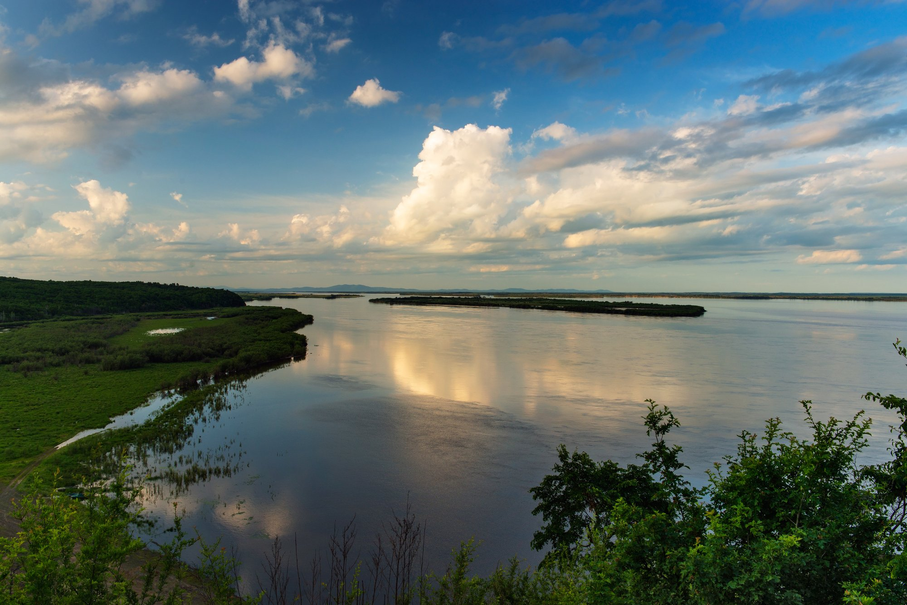

Главная
Реки
Озера
Моря
Проливы
Словарь
О Нас
Справочник Гидролога
На нашем сайте, только достоверная и проверенная информация
Узнать информацию
 Аму́р — река на Дальнем Востоке в Восточной Азии. Протекает по территории России и границе России и КНР. Длина — 2824 км, площадь бассейна — 1 003 000 км². Впадает в Охотское море или Японское море. Годовой сток составляет 403,66 км³.
Озеро Байкал – огромное древнее озеро в горах Сибири к северу от монгольской границы. Байкал считается самым глубоким озером в мире. Он окружен сетью пешеходных маршрутов, называемых Большой байкальской тропой. Деревня Листвянка, расположенная на западном берегу озера, – популярная отправная точка для летних экскурсий. Зимой здесь можно кататься на коньках и собачьих упряжках. Средняя глубина: 744 м Длина: 636 км Площадь: 31 722 км² Ширина: 80 км Площадь водосбора: 560 000 км².
Япо́нское мо́ре — окраинное море в составе Тихого океана, отделяется от него Японскими островами. От соседнего Охотского моря отделено островом Сахалин, от соседнего Жёлтого моря — Корейским полуостровом. Площадь: 978 000 км² Средняя глубина: 1 752 м Наибольшая глубина: 3742 м
Босфо́р — пролив между Европой и Малой Азией, соединяющий Чёрное море с Мраморным. Является самым узким межконтинентальным проливом в мире. В паре с Дарданеллами соединяет Чёрное море с Эгейским, которое является частью Средиземного. На обеих сторонах пролива расположен крупнейший турецкий город Стамбул. Средняя глубина: 65 м Ширина: 0,7 — 3,7 км Наибольшая глубина: 120 м Длина: 29,9 км
Слова́рь — книга или любой другой источник, информация в котором упорядочена (систематизирована) c помощью разбивки на небольшие статьи, отсортированные по названию или тематике. Различают энциклопедические и лингвистические словари. С развитием компьютерной техники всё большее распространение получают электронные словари и онлайн-словари.
Гидрологи исследуют круговорот воды в природе, влияние на него деятельности человека и управление режимом водных объектов и водным режимом отдельных территорий проводит анализ гидрологических элементов для отдельных территорий и Земли в целом даёт оценку и прогноз состояния и рационального использования водных ресурсов; пользуется методами, применяемыми в географии, физике и других науках.


 Япо́нское мо́ре — окраинное море в составе Тихого океана, отделяется от него Японскими островами.
От соседнего Охотского моря отделено островом Сахалин, от соседнего Жёлтого моря — Корейским полуостровом.
Площадь: 978 000 км²
Средняя глубина: 1 752 м
Наибольшая глубина: 3742 м
Япо́нское мо́ре — окраинное море в составе Тихого океана, отделяется от него Японскими островами.
От соседнего Охотского моря отделено островом Сахалин, от соседнего Жёлтого моря — Корейским полуостровом.
Площадь: 978 000 км²
Средняя глубина: 1 752 м
Наибольшая глубина: 3742 м Слова́рь — книга или любой другой источник, информация в котором упорядочена (систематизирована) c помощью разбивки на небольшие статьи, отсортированные по названию или тематике. Различают энциклопедические и лингвистические словари. С развитием компьютерной техники всё большее распространение получают электронные словари и онлайн-словари.
Слова́рь — книга или любой другой источник, информация в котором упорядочена (систематизирована) c помощью разбивки на небольшие статьи, отсортированные по названию или тематике. Различают энциклопедические и лингвистические словари. С развитием компьютерной техники всё большее распространение получают электронные словари и онлайн-словари.